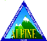

Release Notes
COUGAAR 7.0

|  |
Release NotesCOUGAAR 7.0 |
|
|
Jump down to:
Overview of this ReleaseMiniBuild 7.0 is a new branch release. 7.0 is functionally identical to MB6.8, but has be reorganized into different packages and modules. See 7.0/README for detailed information on converting 6.8 software into 7.0 software. For additional details, please review the following documentation:
Organization of a ReleaseThe files in an COUGAAR release fall into the following organizational areas:
Utilities in a ReleaseThe following PSPs (in the alpine module) and LPS services are tested with each release and should aid in PlugIn debugging and understanding society behavior:
MiniTestConfig Example ImplementationsALPINE maintains only the node configurations that we are currently using for testing purposes and for the ALP demonstrations. These node configurations are available in subdirectories under "alpine/configs" in the release. To execute the COUGAAR society, these nodes can be combined to form a society that can be executed on a single computer or distributed across multiple computers. Note that only minitestconfig will work "out of the box". We intend to expand this test society in subsequent MiniBuild releases in size and complexity. PlugIn developers are encouraged to use minitestconfig as a starting point for bringing PlugIn compliance up to the latest infrastructure release. In addition, the subdirectory "flag-config" contains the configuration files used for the Flag Demonstration society. This society requires the use of PlugIns from various COUGAAR participants.Delivering Software Products (PlugIns)Choose a product name that reflects the functionality of the family of PlugIns. Avoid names with obvious collision problems such as those associated with the Logistics domain. There needs to be a direct correlation between your product name and your Java package name. It is recommended that you follow the usual Java package naming guidelines (e.g., "com.bbn.tops...").We will be providing a cvs repository for COUGAAR plugin developers that are ALPINE subcontractors and participating in the FY2000 demonstration. If you would like to participate, we will provide you with details as to how to interact with the cvs repository (setting CVSROOT and passwords). The directory structure should follow the one described at the March COUGAAR PlugIn Developers workshop.
"$ALP_INSTALL_PATH\plugins\tops.jar"and your java code could find your data files with:
Developing and Running COUGAAR SocietiesGeneral DevelopmentUser Interface DevelopmentFuture ReleasesWe anticipate that there may be further releases as we address system deficiencies and enhancement requests. Please watch the alp-plugin-developers email list and carefully read the latest PlugIn Developers Guide (PDG) and all release notes.Questions and Bug ReportsIn addition, email infrastructure questions and initiate community discussions through alp-plugin-developers@bbn.com. Bug and system-enhancement reports can be submitted through the ALPINE or COUGAAR websites.Known bugs and other issuesNone known. |